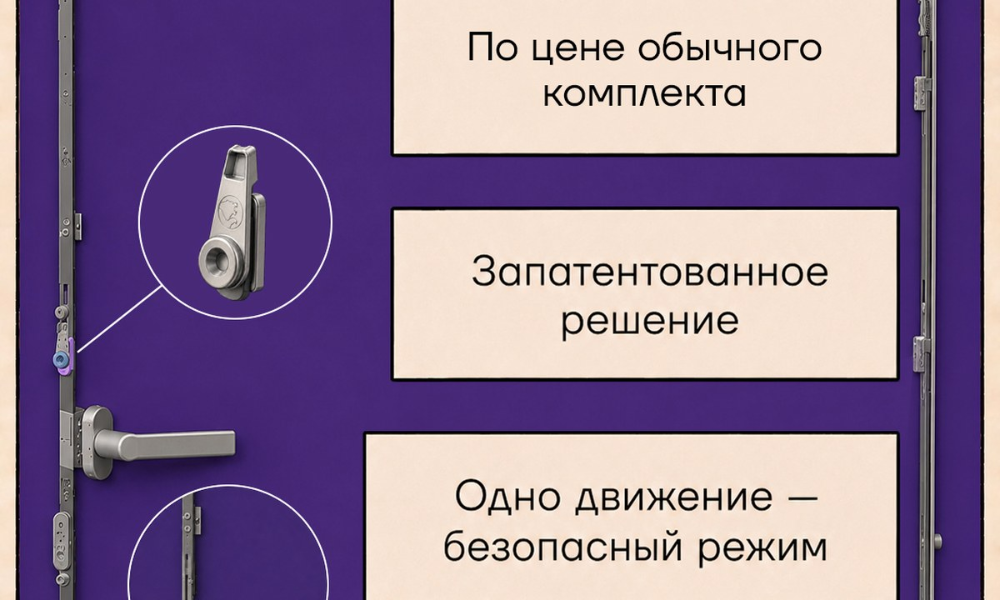
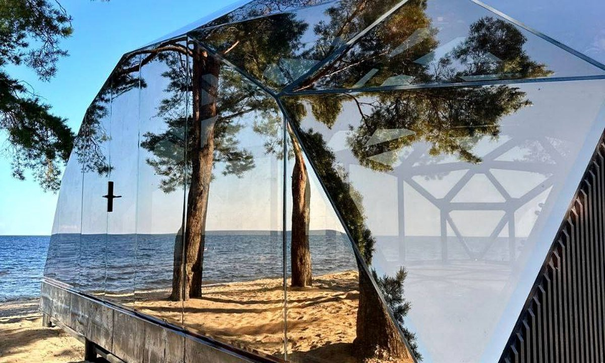
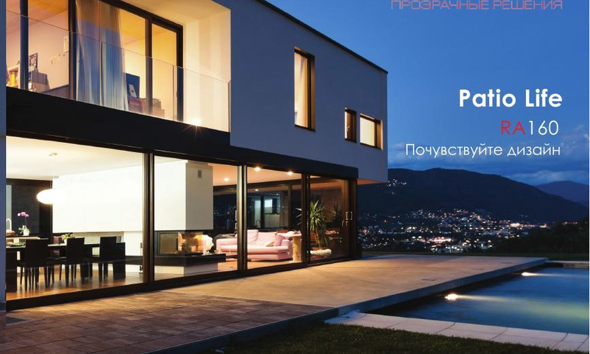
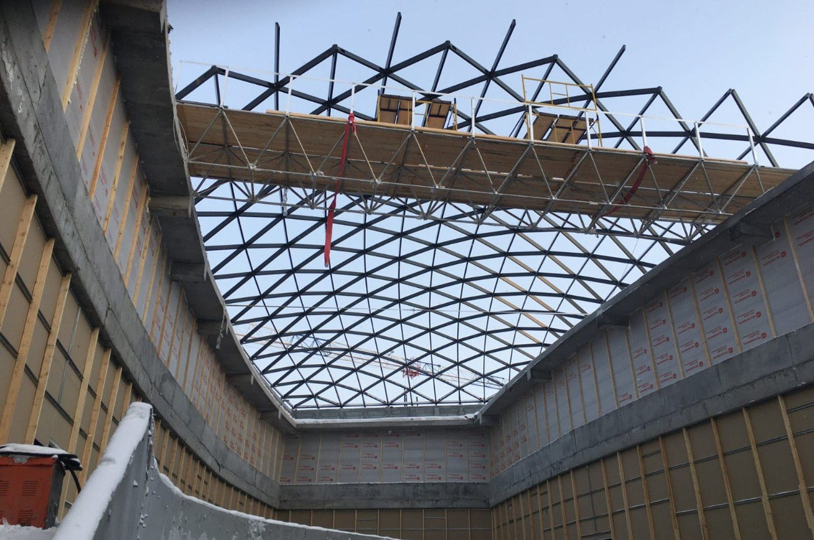
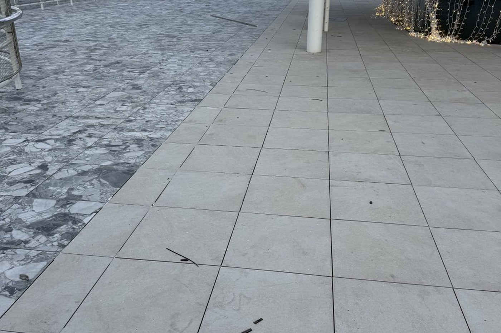
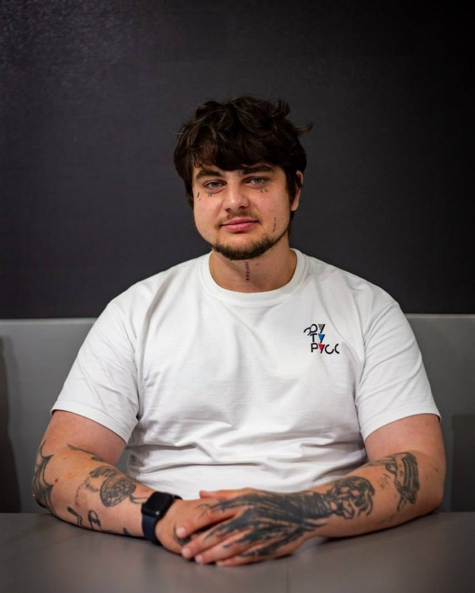
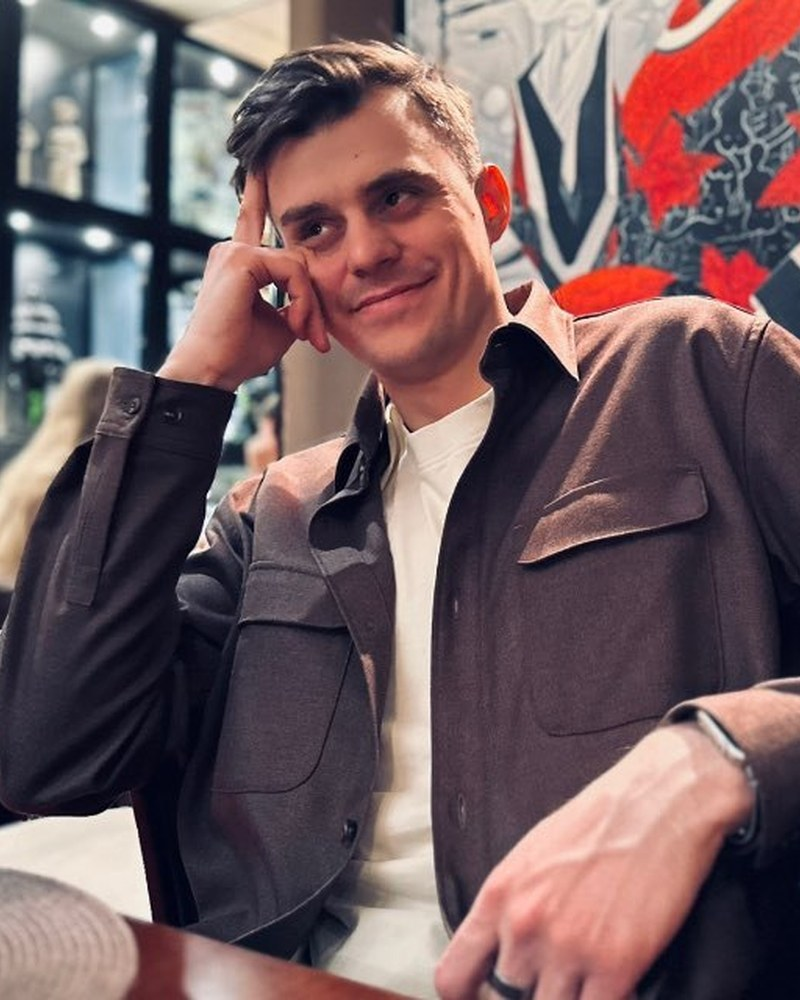
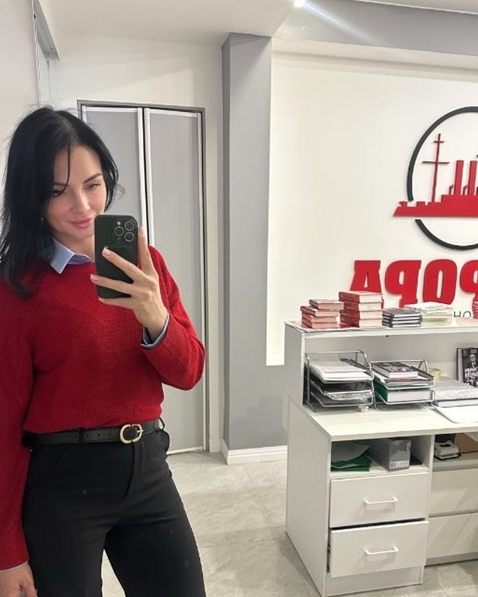

Разбираем ТЗ
Что должно произойти в пространстве: свет, вид, безопасность, тепло, тишина, эксплуатация.
ОКНОТИКА · V2.21 preview
Инженерно‑интеграционная компания · экспертиза в СПК и СМР
Мы превращаем архитектурную задачу в реализуемое решение: вид, свет, тепло, безопасность, акустика, автоматика, монтаж и документы — в одном маршруте от альбома архитектурных решений до сдачи объекта.
Не “продажа окон”
Клиенту нужен не профиль и не абстрактный стеклопакет. Нужен вид на лес без тяжёлой рамы, честный цвет фасада без зелёного оттенка, детская безопасность с сохранением эстетики окна, тёплый контур, акустика, автоматика, защита конструкций на стройке и документы для технадзора.
ОКНОТИКА собирает под это маршрут: материал, профильную систему, стекло, фурнитуру, производство, проектные бюро, монтажных подрядчиков, фото/видео фиксацию, исполнительную документацию и сервис.
Что должно произойти в пространстве: свет, вид, безопасность, тепло, тишина, эксплуатация.
2–3 маршрута реализации: быстрее, дешевле, надёжнее или визуально сильнее.
Цена, срок, качество, производство, монтаж, гарантия, документы и ответственность.
Замер, производство, логистика, монтаж, фото/видео фиксация, исполнительная документация.
Решения
Мы не привязаны к одному заводу. В ОКНОТИКЕ можно собрать решение на ПВХ, алюминии, дереве и углеродных композитах: от массовой профильной системы по рыночной цене до редкого продукта для сложного архитектурного решения. Stoller, Carbon Glass, Ралюма, ФУТУРУСС, Thermo Pad и Protectapeel — не витрина брендов ради брендов, а инструменты под задачу.

OKNOTIKA
Автоматизация створок, скрытая интеграция в профиль, управление с панели, пульта, смартфона и голосовых помощников. Подключаем окно к выбранной экосистеме умного дома: Алиса, Siri, Google Assistant, Alexa и другие — через совместимые платформы, шлюзы или BMS.
Открыть страницу автоматики →
ФУТУРУСС
Откидно-поворотная логика: в обычном сценарии створка сначала откидывается на безопасное проветривание, а не распахивается. Одно движение — безопасный режим, без замка на ручке и без порчи эстетики окна. Вес створки на скрытой петле — до 180 кг.

Стекло как инженерный элемент
Low‑iron стекло без зелёного фильтра, Thermo Glass, Smart Glass, Art Glass, мультифункциональные и низкоэмиссионные пакеты, греющее стекло, безопасные классы, моллированное и цветное архитектурное стекло — под свет, климат, приватность и образ фасада.

Carbon Glass
Карбоновые системы для больших проёмов и архитектурных стеклопакетов: профиль визуально уходит в стеклопакет, меньше стоек и импостов, а коэффициент линейного расширения близок к стеклу. Для объектов, где стекло должно стать архитектурой, а не рамой вокруг вида.

Stoller
Окна, порталы и фасадные системы для объектов, где нужен тёплый дорогой материал: дома, рестораны, отели, террасы, реставрация и архитектура с характером.

Ралюма
Прозрачные системы для террас, веранд, зимних садов и порталов: подъёмные, складные и раздвижные сценарии, тёплые версии, минимальная видимая ширина профиля и интеграция в архитектуру без визуального шума.

Рубикон
Разработка нестандартных решений СПК, узлов примыкания и реализация на объекте смелых запросов: когда каталог уже закончился, а архитектурную задачу всё равно надо довести до результата.

Thermo Pad
Модульная система снеготаяния для эксплуатируемых кровель, террас, балконов и входных групп: греющая керамогранитная плита, регулируемые опоры, зонирование и сервис без разрушения покрытия.
Protectapeel
Временная полимерная защита на водной основе: наносится на поверхность, высыхает и превращается в снимаемую плёнку. Применяется после теста/макета и снижает риск повреждений от краски, цемента, штукатурки, пыли, щелочных загрязнений и соседних подрядчиков.
Кейсы
ОКНОТИКА остаётся единым центром ответственности за маршрут реализации, а в монтажной сети — команды с опытом работы на жилых, коммерческих, социальных и частных объектах.

Монтажные подрядчики ОКНОТИКИ
Опыт на крупных жилых, коммерческих и социальных объектах. В числе объектов — Level, A101, Самолёт, G‑3, Ленинградский вокзал, СК «Олимпийский». Подробную карту объектов отправляем по запросу.

Светопрозрачная кровля сложной геометрии.

Зенитное остекление в ресторанном интерьере.
Крупноформатная светопрозрачная конструкция.

15 000 м² Thermo Pad для эксплуатируемых поверхностей.
Команда
Без колл-центров и “передам ответственному”. На проекте есть стратегия, коммерция, продуктовые направления, исполнение, финансы, бухгалтерия и проектная координация.

Директор по развитию
Стратегия, нетворкинг, партнёрства и внедрение новых продуктов.
Генеральный директор
Операционное управление, распределение ответственности и контроль исполнения обязательств.
Коммерческий директор
Ценовая политика, ключевые клиенты и коммерческие условия проектов.

Исполнительный директор
Подрядчики, производство работ, сроки, качество и доведение объектов до результата.
Руководитель проектов
Связной на объекте: координирует монтажников, фиксирует вопросы и держит коммуникацию с командой.

Руководитель проекта «Умное окно»
Ведёт продукт OKNOTIKA × ФУТУРУСС: презентации, технические консультации и развитие решения.
Менеджер проектов
Помогает вести проектные задачи, коммуникацию с клиентами и передачу решений в работу.

Главный бухгалтер
Закрывающие документы, бухгалтерский учёт и взаимодействие по первичке.

Финансовый директор
Финансовое планирование, бюджетирование и контроль денег проекта.
Юридическое подтверждение
ООО «ОКНОТИКА» является членом СРО Ассоциация «ЭнергоСтройАльянс» (СРО-С-089-27112009), регистрационный номер члена СРО — 1576.
Контакт
Напишите Александру: пришлите задачу, чертежи, фото объекта или просто желаемое архитектурное решение. Дальше соберём варианты.
АдресМосква, улица Макаренко, 2/21с2
ГеографияМосква, регионы РФ, страны СНГ и проекты с выездной монтажной логистикой